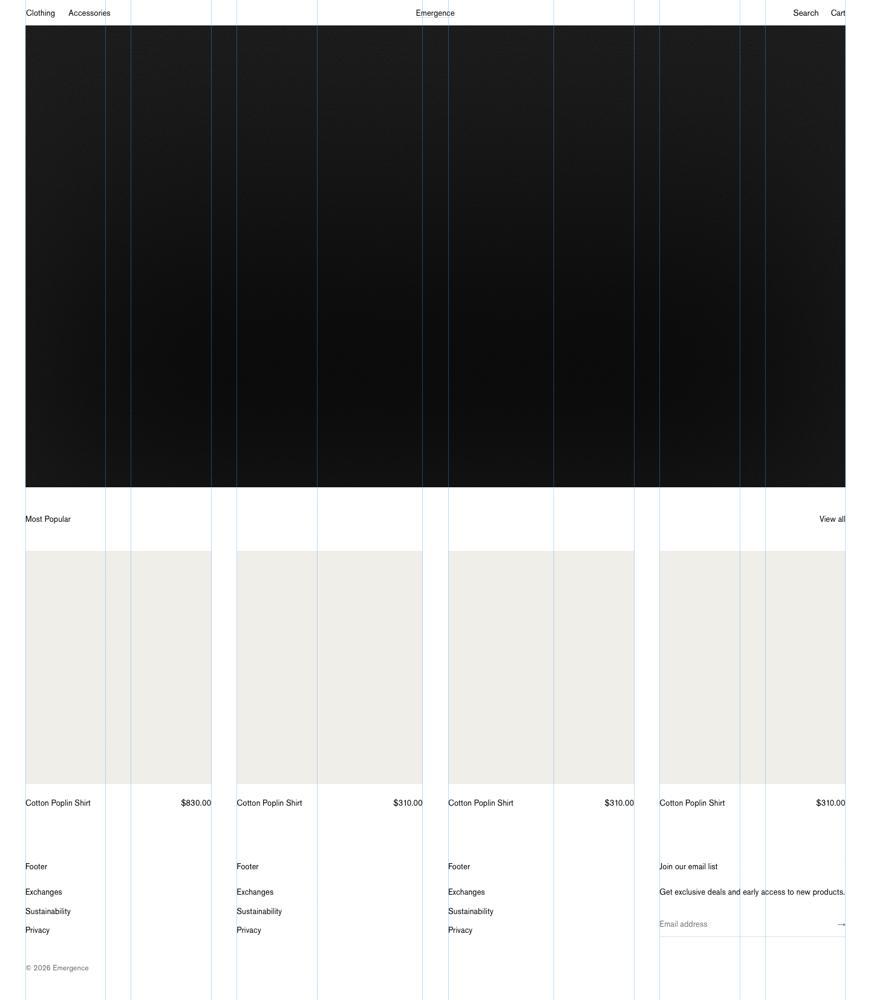
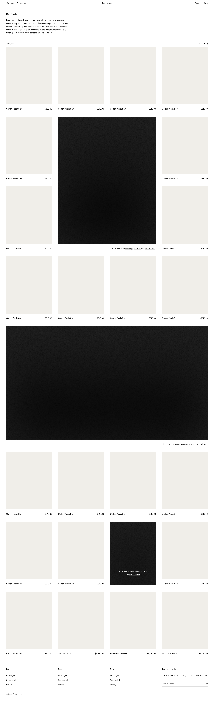
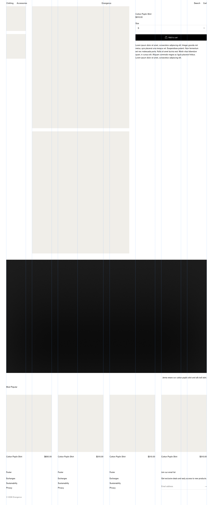

A design system for ecommerce—grounded in behavioral science.
View the demo →
Contact me for licensing: r@mote.agency
Introduction
Simon, the Science of Design
Mokyr, Progress
Kahneman, Cognitive Ease
Thaler, Choice Architecture
Cialidini, Influence
Sequia, Intelligence and Knowledge
McKinsey, Design
Apple, Human Interface Guidelines
Josef Müller-Brockmann, Grid Systems
Don Norman, The Design of Everyday Things
Systems
Grid
Clarity, consistency, coherence. Baseline grid based on leading. 8 column grid, gutters and margins are responsive multiples of leading.
Typography
Heading 1–6, paragraph & body. 21px leading. 1/8th pixel letter spacing. Antialiased font smoothing.
Colors
Foreground, background, light, and opacity scales. Hover, focus, active states for lines.
Pages
Home

https://rvdmijnsbrugge.myshopify.com
Home page should show new arrivals with matching campaign video and imagery so that marketing channels are harmonized. Brands should work with a collections and campaigns content calendar system. New Arrivals show first because that's most likely what a customer seems first from advertizing. After New Arrivals we should show Most Popular, or the products that the customer most likely might be looking for, if not New Arrivals.
Collection

https://rvdmijnsbrugge.myshopify.com/collections/all
Collection pages should start with a short paragraph for context around the collection. This is also a great opportunity for brands to highlight some of the unique aspect of their collection, like superior quality or collaborations with artists. Campaign imagery should be mixed in with the products, this will provide visaul context if customers land on the collection page from advertising. It will also give the strongest campaign images a permanent place to live. Additionally, campaign images should be set up as figures with captions, these captions should detail all the products shown in the image, as this has the potential of increasing average order value.
Product

https://rvdmijnsbrugge.myshopify.com/products/cotton-poplin-shirt-1
Product pages should use one variant dropdown so inventory levels can be shown at a glance with one click for all variants. If a product has more than one option, or is a combined product, swatches should be used. Swatches that lead to a sold out variant should show so, to communicate scarcity and urgency accurately. Additionally, carefully curated complementary product should be shown to increase average order value. Besides the main product, all relevant campaign imagery should be presented, showing the product in context, increasing conversion rate and adding all possible other products shown in the campaign images, increasing average order value. Furthermore, related products should be show, giving customers alternative options, in case the currently viewed product was close to what they were looking for, but not quite. For example, products of the same category or of the same brand, increasing conversion rate.
Components
Header
Search
Popular search terms because we want to save users time typing by putting the most likely search terms infront of them.
Trending products to hint at urgency, for example products that went viral on socials and are at risk of selling out. These are different from most popular products shown in the empty cart, those are the products that have the highest chance of being added to cart and converting.
Suggestions for search terms that might be incomplete as the user types, again trying to save tehm effort typing.
Results are what we really want the user to do click on one of the products resulting from the search and hopefully convert.
Filters
Opening with these detailed availability filter emphasises urgency and scarcity, further amplifying the badge overlays, size hover previews, and size dropdowns showing limited inventory.
Cart
Empty cart shows all time most popular products, those with the highest conversion rate, and chance of being added to cart together with a text link to the most popular collection that serves as a view all to the most popular products.
Figures
Figures should show campaign videos and imagery in a manner that is harmonized with all marketing channels. Caption can be below or overlayed and should detail all products shown in the image or video, increasing average order value.
Products
Products should show variants like size, clearly marking those sold out, and swatches communicating scarcity, demand, and urgency in a similar manner.
Sources
Simon
The Science of Design.
Mokyr
Technological Progress.
Kahneman
Cognitive Ease.